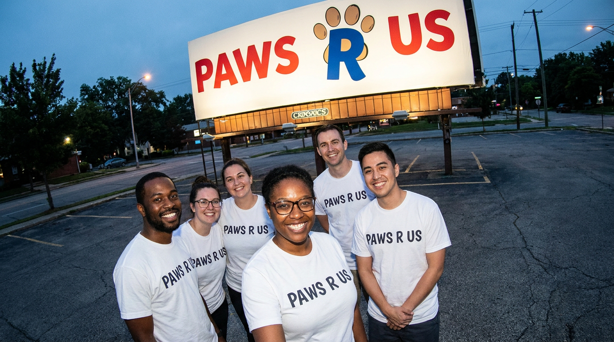

About Us
Our story
Paws R Us (SA) was founded in 2012 as a small, volunteer-run effort to network abandoned and surrendered dogs across Gauteng. Over more than a decade, we have grown into a registered non-profit company, operating from a shelter facility in Midrand and maintaining a strong community presence in Fourways, Johannesburg. Today, we rely on a small dedicated team and a wide network of approved foster homes throughout Gauteng to care for rescued dogs until they find permanent homes.
Our mission
To rescue, provide safe haven for, and re-home unwanted, abandoned, and surrendered dogs across Gauteng, while promoting responsible pet ownership through sterilisation and vaccination.
Our vision
A Gauteng where no dog is abandoned or left without care, and where every rescued animal finds a safe, loving, permanent home.
Our team & foster network
Our work is only possible because of our dedicated core team and the many approved foster families across Gauteng who open their homes to dogs awaiting adoption. Every dog in our care is sterilised, vaccinated, and given the individual attention needed to prepare them for a new home.
